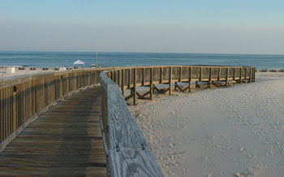

Welcome guests!
 When you arrive at The Striped Umbrella, check in at The Club House. Look for the signs that will direct you to registration. Our beautiful club house is the home base for our registration offices, The Sand Crab Cafe, and The Sea Spa. Registration is open from 8:00 a.m. until 6:00 p.m. Please call to make arrangements if you plan to arrive after 6:00 p.m. The cafe and spa hours are both posted and listed in the information packet that you will receive when you arrive. The main swimming pool is directly behind The Club House. A lifeguard is on duty from 8:00 a.m. until 9:00 p.m. The pool area includes a wading pool, a lap pool, and a large pool with a diving board. Showers are located in several areas for your use before and after swimming. We also provide poolside service from the cafe for snacks and lunch.
When you arrive at The Striped Umbrella, check in at The Club House. Look for the signs that will direct you to registration. Our beautiful club house is the home base for our registration offices, The Sand Crab Cafe, and The Sea Spa. Registration is open from 8:00 a.m. until 6:00 p.m. Please call to make arrangements if you plan to arrive after 6:00 p.m. The cafe and spa hours are both posted and listed in the information packet that you will receive when you arrive. The main swimming pool is directly behind The Club House. A lifeguard is on duty from 8:00 a.m. until 9:00 p.m. The pool area includes a wading pool, a lap pool, and a large pool with a diving board. Showers are located in several areas for your use before and after swimming. We also provide poolside service from the cafe for snacks and lunch.
After you arrive, you will want to take a stroll down the boardwalk to the beach. The entrance to the boardwalk is just past the pool area. The boardwalk provides a safe route to the beach for both our guests and the native vegetation. The sea oats and other flora are tender. Please do not step on them or pick them. A lifeguard is on duty from 9:00 a.m. until sunset. Check the flag each time you head for the beach for the status of current swimming conditions and advisories. Jellyfish can be a problem at times, so be careful when you are walking along the beach, especially as the tide is retreating from high tide. We have beach chairs, umbrellas, and towels available to our guests. Check with the attendant on duty. Water, juices, and soft drinks are also available for purchase at the end of the boardwalk. Don't forget your sunglasses, hat, and sunscreen! A sunburn is sure way to ruin a nice vacation. The gift shop in The Club House is a convenient place to pick up any items that you may have forgotten to bring along, in addition to an extensive inventory of bathing suits, sandals, and other beachwear.
Click the map below to view a larger size image.